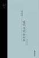
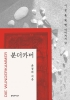
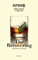
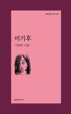
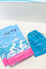
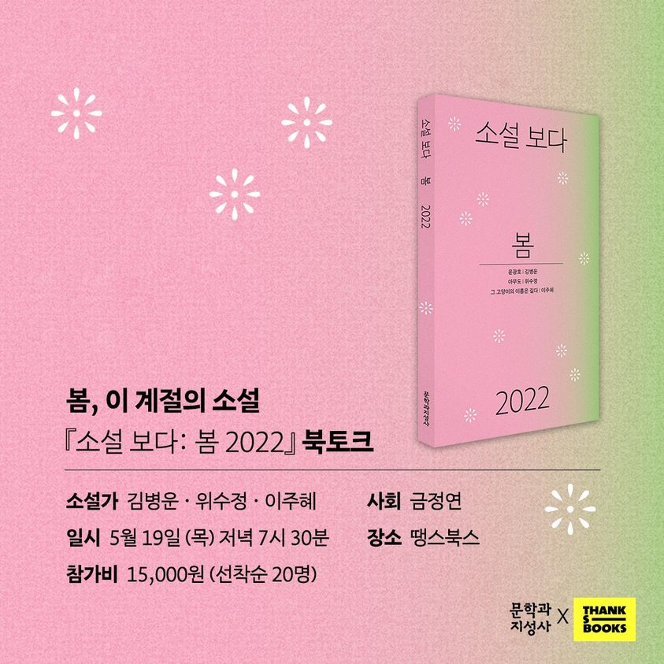
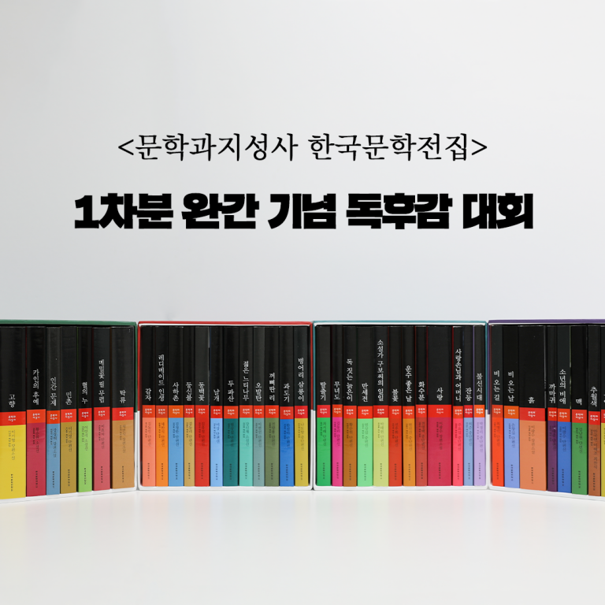

신간도서문지의 새로운 도서를 소개합니다
소설, 소설 선집
소년이로少年易老
편혜영
질문에 질문이 꼬리를 무는 삶의 수수께끼
우리는 이 어려운 질문에 답할 수 있을까
어른이 된다는 것. 어떠한 상황에도 의연할 수 있다는 것을 말하는 걸까.
편혜영은 이 지점에서 독자들에게 묵직한 질문을 하나 던진다.
우리는 삶이 만들어놓은 문제에 대한 답을 구할 수 있을까.
문학과지성 시인선, 시
입속의검은잎
기형도
기형도는 일상 속에 내재하는 폭압과 공포의
심리 구조를 추억의 형식을 통해 독특하게 표현하고 있다.
바람이 그치고 쩡쩡 얼었던 사나운 밤이 물러가면
눈은 또 다른 세상 위에 눈물이 되어 스밀 것임을 나는 믿는다.
그때까지 어떠한 죽음도 눈에게 접근하지 못할 것이다.
소설, 소설 선집
실패한여름휴가
허희정
이해할 수도 장악할 수도 없는 세계에서
미세한 파편들로 빚어내는 미묘한 알리바이
문장을 무대 장치처럼 쌓아올렸다가 부서뜨리고
흔적과 파편을 층층이 겹쳐 만든 그의 소설은
섣부른 정의나 명명을 비껴나며 독특한 분위기를 형성한다.
소설, 장편소설
0인칭의자리
윤해서
누구의 자리도 아닌 위치에서
모두의 자리를 조감하는 시선
인간들의 초상을 차곡차곡 쌓아 올리는 방식으로
낱낱의 사건과 감정이 종국에는 우리 모두의
공통 감각이자 미래의 전망으로 수렴되는 이미지를 보여준다.
{kind=link}
{kind=link}
{kind=link}
{kind=link}
문학과 지성사 새로운 인문시리즈
채석장
more
문학과 사회
문학과 사회에 대한 깊이 있는 탐색
열린 성찰로 한국 문학을 풍요롭게 하고
인문지성의 지평을 넓혀온 계간.
시·소설·평론·역사·사회·철학 등
인문 전반에 관한 글을 받아보세요.
-
인터뷰
낯선 시간 속으로 소설가 이인성 인터뷰 “소설은 작가가 자신에게, 또 독자에게 던지는 질문”
Q. 1970년대 대학을 다닌 20대의 이야기인데?
Q. 소설에서 여러 개의 사건이 겹쳐 서술되고, 시간의 흐름도 뒤섞여 있는데? -
추천사
분더카머와 카메라 옵스큐라, 방에 대한 두 개의 메타포 - 영화비평가 유운성
분더카머는 은신처이자 보호소이다. 무엇을 위한? 아마도, 카메라 옵스큐라가 몰아낸 모든 것들을 위한.
방에 대한 두 개의 메타포, 분더카머와 카메라 옵스큐라는 끝내 서로 불화할 수밖에 없다. -
리 뷰
기꺼이 빈손으로 - 한수희 (에세이스트)
결핍, 그리고 위안. 중독자들은 자기 안에 뚫린 도넛의 구멍 같은 결핍 때문에 매순간 뼈 사이로 스며드는
바람 같은 추위를 느낀다. 추울 때는 따뜻한 것이 필요하다. 그것도 아주 시급하게.
-
채용공고
㈜문학과지성사 영업/마케팅 경력 사원
㈜문학과지성사에서 함께 일할 영업/마케팅 경력 사원을 모십니다.
모집 분야 및 인원: 영업 팀장 0명, 영업 담당자 0명, 마케팅 팀장 0명 -
알립니다

시인 김혜순, 2022 삼성호암상 예술상 수상
여성의 존재방식에 대한 끊임 없는 사유와 언어적 실험을 통해 고유한 시적 성취를 이뤘고, 지난해 스웨덴 문학상 ‘시카다상’을 받는 등
동시대 한국 시인으로는 가장 뚜렷한 국제적 존재감과 평판을 인정받았다고 재단은 평가했습니다. -
알립니다
이민하 시인, 제20회 지훈상 수상
지훈상 운영위원회는 탁월한 감성과 통찰로 한국 문화의 저변을 넓힌 업적을 기려 치열한 심사과정을 통해
이민하 시인을 수상자로 선정했다고 전했습니다. 수상작은 시집 <미기후>입니다.
-
이벤트
문지아이들의 <상어 이빨> 온라인 서점에서 상어 이빨 포함 이벤트 대상 도서 2종 이상 구매 시, 스트링 파우치 증정!
나를 찾아 떠나는 360킬로미터 자전거 여행!
엄마가 가장 필요한 시기에 각자 다른 이유로 엄마를 벗어나 무작정 자전거에 오른 두 아이의 가슴 뜨거운 여정 -
이벤트
#소설보다봄2022 #땡스북스 #북토크 <새로운 세대가 그려내는 봄의 소설적 풍경>
<소설 보다: 봄 2022>의 세 소설가와 함께! 봄, 이 계절의 소설에 대해 이야기 합니다
- 5월 19일(목) 저녁 7시 30분! 땡스북스에서 선착순 20분과 함께할 예정입니다. 신청링크를 통해 참여해주세요!
-
행사안내
‘문학과지성사 한국문학전집’ 1차분 완간 기념 독후감 대회
참여 방법: 문학과지성사 한국문학전집 도서를 읽고 난 후 2,000자 이내의 독후감 작성!
<독후감 대회 응모> 링크를 통해 제출하면 참여완료! 우수작 10명에게 상장수여 및 한국문학전집을 드립니다.